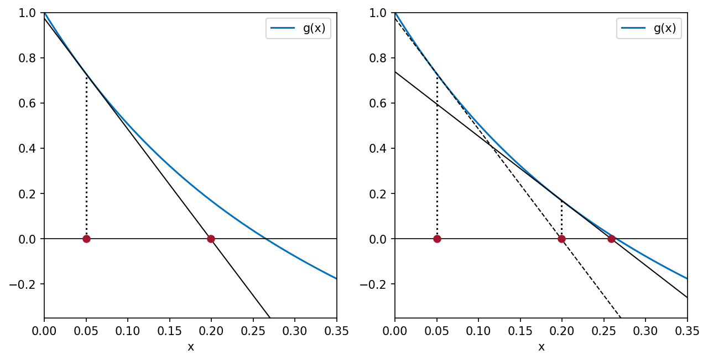
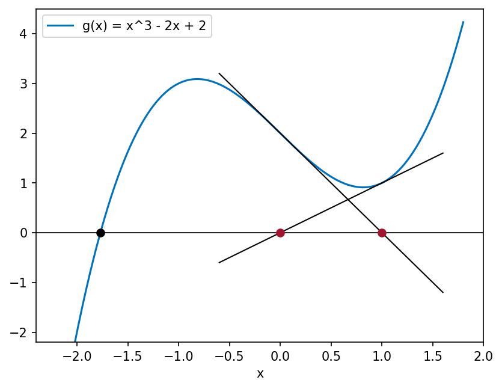
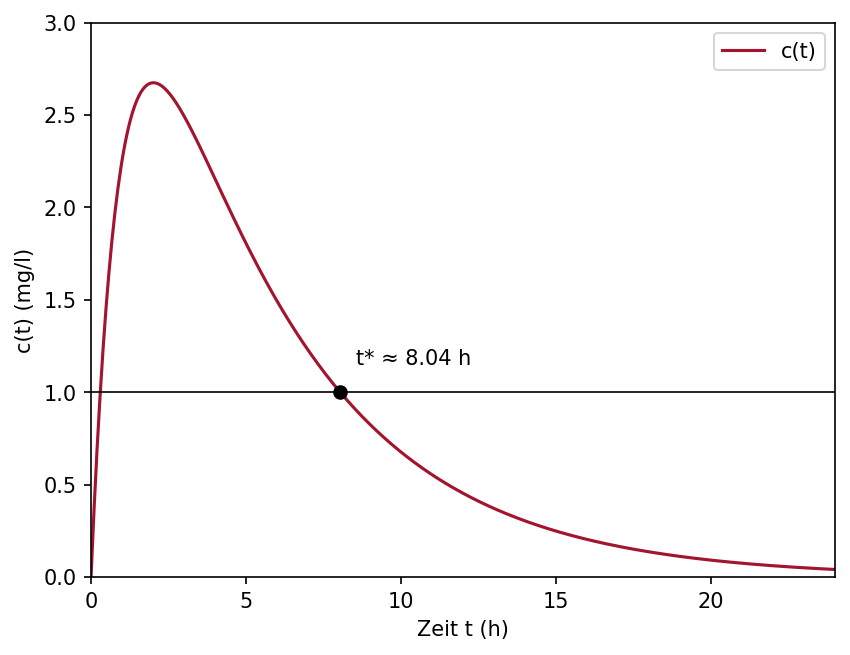

Kapitel 1 · Diskrete dynamische Systeme mit einer Variablen
1.5Newton-Verfahren
Viele Gleichungen lassen sich nicht nach x auflösen. Das Newton-Verfahren ersetzt die Funktion durch ihre Tangente und nimmt deren Nullstelle als nächste Näherung. Es ist selbst eine Differenzengleichung und konvergiert, wenn es konvergiert, sehr schnell.
Zu jeder Abbildung des Abschnitts finden Sie das Programm, das sie erzeugt. Ändern Sie Parameter und Startwerte und beobachten Sie, was passiert. Abbildungs- und Gleichungsnummern beziehen sich auf das Buch.
Abb. 1.32
Stationärer Zustand als Nullstelle
e−x = x ⇔ g(x) = e−x − x = 0
Der Schnittpunkt mit der Winkelhalbierenden ist zugleich die Nullstelle von g. Die Fixpunktiteration braucht hier viele Schritte.

# Abb. 1.32: stationärer Zustand von x_{n+1} = exp(-x_n) (Buch, Abschnitt 1.5)
# links: Schnittpunkt von f(x) = exp(-x) mit y = x; rechts: gleichwertig die Nullstelle von g(x) = exp(-x) - x
# (c) 2026 Philipp Kügler · Programm zum Buch „Dynamische Systeme in den Lebenswissenschaften“ · MIT-Lizenz (siehe LICENSE)
using Printf, Plots
x = 0.5
for n in 1:100 # Fixpunktiteration x_{n+1} = exp(-x_n)
global x = exp(-x)
end
@printf("Fixpunktiteration nach 100 Schritten: x = %.10f\n", x)
@printf("g(x) = exp(-x) - x = %.1e\n", exp(-x) - x)
blau = RGB(0, 0.447, 0.741)
xx = range(0, 1, length = 200)
p1 = plot(xx, exp.(-xx), color = blau, lw = 2, label = "f(x) = exp(-x)", xlabel = "x")
plot!(p1, [0, 1], [0, 1], color = :black, label = "y = x"); scatter!(p1, [x], [x], color = :black, label = "")
p2 = plot(xx, exp.(-xx) .- xx, color = blau, lw = 2, label = "g(x) = exp(-x) - x", xlabel = "x")
hline!(p2, [0], color = :black, label = ""); scatter!(p2, [x], [0], color = :black, label = "")
display(plot(p1, p2, layout = (1, 2), size = (900, 420)))% Abb. 1.32: stationärer Zustand von x_{n+1} = exp(-x_n) (Buch, Abschnitt 1.5)
% links: Schnittpunkt von f(x) = exp(-x) mit y = x; rechts: gleichwertig die Nullstelle von g(x) = exp(-x) - x
% (c) 2026 Philipp Kügler · Programm zum Buch „Dynamische Systeme in den Lebenswissenschaften“ · MIT-Lizenz (siehe LICENSE)
x = 0.5;
for n = 1:100 % Fixpunktiteration x_{n+1} = exp(-x_n)
x = exp(-x);
end
fprintf('Fixpunktiteration nach 100 Schritten: x = %.10f\n', x);
fprintf('g(x) = exp(-x) - x = %.1e\n', exp(-x) - x);
blau = [0 0.447 0.741];
xx = linspace(0, 1, 200);
subplot(1, 2, 1);
plot(xx, exp(-xx), 'Color', blau); hold on
plot([0 1], [0 1], 'k-'); plot(x, x, 'ko', 'MarkerFaceColor', 'k'); hold off
xlabel('x'); legend('f(x) = exp(-x)', 'y = x');
subplot(1, 2, 2);
plot(xx, exp(-xx) - xx, 'Color', blau); hold on
plot([0 1], [0 0], 'k-'); plot(x, 0, 'ko', 'MarkerFaceColor', 'k'); hold off
xlabel('x'); legend('g(x) = exp(-x) - x');# Abb. 1.32: stationärer Zustand von x_{n+1} = exp(-x_n) (Buch, Abschnitt 1.5)
# links: Schnittpunkt von f(x) = exp(-x) mit y = x; rechts: gleichwertig die Nullstelle von g(x) = exp(-x) - x
# (c) 2026 Philipp Kügler · Programm zum Buch „Dynamische Systeme in den Lebenswissenschaften“ · MIT-Lizenz (siehe LICENSE)
import numpy as np
import matplotlib.pyplot as plt
x = 0.5
for n in range(100): # Fixpunktiteration x_{n+1} = exp(-x_n)
x = np.exp(-x)
print(f"Fixpunktiteration nach 100 Schritten: x = {x:.10f}")
print(f"g(x) = exp(-x) - x = {np.exp(-x) - x:.1e}")
xx = np.linspace(0, 1, 200)
fig, axs = plt.subplots(1, 2, figsize=(10, 4.8))
axs[0].plot(xx, np.exp(-xx), color=(0, 0.447, 0.741), label="f(x) = exp(-x)")
axs[0].plot([0, 1], [0, 1], "k", lw=0.8, label="y = x")
axs[0].plot(x, x, "ko")
axs[1].plot(xx, np.exp(-xx) - xx, color=(0, 0.447, 0.741), label="g(x) = exp(-x) - x")
axs[1].axhline(0, color="k", lw=0.8)
axs[1].plot(x, 0, "ko")
for ax in axs:
ax.set_xlabel("x"); ax.legend()
plt.show()# Abb. 1.32: stationärer Zustand von x_{n+1} = exp(-x_n) (Buch, Abschnitt 1.5)
# links: Schnittpunkt von f(x) = exp(-x) mit y = x; rechts: gleichwertig die Nullstelle von g(x) = exp(-x) - x
# (c) 2026 Philipp Kügler · Programm zum Buch „Dynamische Systeme in den Lebenswissenschaften“ · MIT-Lizenz (siehe LICENSE)
x <- 0.5
for (n in 1:100) x <- exp(-x) # Fixpunktiteration x_{n+1} = exp(-x_n)
cat(sprintf("Fixpunktiteration nach 100 Schritten: x = %.10f\n", x))
cat(sprintf("g(x) = exp(-x) - x = %.1e\n", exp(-x) - x))
blau <- rgb(0, 0.447, 0.741)
xx <- seq(0, 1, length.out = 200)
par(mfrow = c(1, 2))
plot(xx, exp(-xx), type = "l", col = blau, lwd = 2, xlab = "x", ylab = "")
abline(0, 1); points(x, x, pch = 16)
legend("topright", legend = c("f(x) = exp(-x)", "y = x"), col = c(blau, "black"), lwd = c(2, 1))
plot(xx, exp(-xx) - xx, type = "l", col = blau, lwd = 2, xlab = "x", ylab = "")
abline(h = 0); points(x, 0, pch = 16)
legend("topright", legend = "g(x) = exp(-x) - x", col = blau, lwd = 2)Ausgabe im Befehlsfenster
Fixpunktiteration nach 100 Schritten: x = 0.5671432904
g(x) = exp(-x) - x = 0.0e+00Abb. 1.33
Die ersten Schritte des Newton-Verfahrens
xn+1 = xn − g(xn) / g′(xn)
Für g(x) = e−5x − x und x0 = 0.05: Die Nullstelle jeder Tangente liefert die nächste Näherung. Die Zahl der richtigen Stellen verdoppelt sich etwa pro Schritt.

# Abb. 1.33: die ersten Schritte des Newton-Verfahrens (Buch, Abschnitt 1.5, Gl. 1.44)
# x_{n+1} = x_n - g(x_n)/g'(x_n) für g(x) = exp(-5x) - x mit x_0 = 0.05
# (c) 2026 Philipp Kügler · Programm zum Buch „Dynamische Systeme in den Lebenswissenschaften“ · MIT-Lizenz (siehe LICENSE)
using Printf, Plots
g(x) = exp(-5x) - x
dg(x) = -5exp(-5x) - 1
x = zeros(7); x[1] = 0.05
for k in 1:6
x[k + 1] = x[k] - g(x[k]) / dg(x[k])
end
for k in 1:7
@printf("x_%d = %.12f\n", k - 1, x[k]) # die Anzahl richtiger Stellen verdoppelt sich etwa pro Schritt
end
xx = range(0, 0.35, length = 300)
bilder = []
for p in 1:2
b = plot(xx, g.(xx), color = RGB(0, 0.447, 0.741), lw = 2, legend = false, xlims = (0, 0.35), ylims = (-0.35, 1), xlabel = "x")
hline!(b, [0], color = :black)
for j in 1:p # Tangente an der Stelle x_{j-1}, ihre Nullstelle ist x_j
plot!(b, xx, g(x[j]) .+ dg(x[j]) .* (xx .- x[j]), color = :black)
plot!(b, [x[j], x[j]], [0, g(x[j])], ls = :dot, color = :black)
end
scatter!(b, x[1:p + 1], zeros(p + 1), color = RGB(0.64, 0.08, 0.18))
push!(bilder, b)
end
display(plot(bilder..., layout = (1, 2), size = (900, 420)))% Abb. 1.33: die ersten Schritte des Newton-Verfahrens (Buch, Abschnitt 1.5, Gl. 1.44)
% x_{n+1} = x_n - g(x_n)/g'(x_n) für g(x) = exp(-5x) - x mit x_0 = 0.05
% (c) 2026 Philipp Kügler · Programm zum Buch „Dynamische Systeme in den Lebenswissenschaften“ · MIT-Lizenz (siehe LICENSE)
g = @(x) exp(-5 * x) - x;
dg = @(x) -5 * exp(-5 * x) - 1;
x = zeros(1, 7); x(1) = 0.05;
for k = 1:6
x(k + 1) = x(k) - g(x(k)) / dg(x(k));
end
for k = 1:7
fprintf('x_%d = %.12f\n', k - 1, x(k)); % die Anzahl richtiger Stellen verdoppelt sich etwa pro Schritt
end
xx = linspace(0, 0.35, 300);
for p = 1:2
subplot(1, 2, p);
plot(xx, g(xx), 'Color', [0 0.447 0.741]); hold on
plot([0 0.35], [0 0], 'k-');
for j = 1:p % Tangente an der Stelle x_{j-1}, ihre Nullstelle ist x_j
plot(xx, g(x(j)) + dg(x(j)) * (xx - x(j)), 'k-');
plot([x(j) x(j)], [0 g(x(j))], 'k:');
end
plot(x(1:p + 1), zeros(1, p + 1), 'o', 'Color', [0.64 0.08 0.18], 'MarkerFaceColor', [0.64 0.08 0.18]);
hold off; axis([0 0.35 -0.35 1]); xlabel('x');
end# Abb. 1.33: die ersten Schritte des Newton-Verfahrens (Buch, Abschnitt 1.5, Gl. 1.44)
# x_{n+1} = x_n - g(x_n)/g'(x_n) für g(x) = exp(-5x) - x mit x_0 = 0.05
# (c) 2026 Philipp Kügler · Programm zum Buch „Dynamische Systeme in den Lebenswissenschaften“ · MIT-Lizenz (siehe LICENSE)
import numpy as np
import matplotlib.pyplot as plt
g = lambda x: np.exp(-5 * x) - x
dg = lambda x: -5 * np.exp(-5 * x) - 1
x = [0.05]
for n in range(6):
x.append(x[-1] - g(x[-1]) / dg(x[-1]))
for n, v in enumerate(x):
print(f"x_{n} = {v:.12f}") # die Anzahl richtiger Stellen verdoppelt sich etwa pro Schritt
xx = np.linspace(0, 0.35, 300)
fig, axs = plt.subplots(1, 2, figsize=(10, 4.8))
for ax, k in zip(axs, (1, 2)):
ax.plot(xx, g(xx), color=(0, 0.447, 0.741), label="g(x)")
ax.axhline(0, color="k", lw=0.8)
for j in range(k): # Tangente an der Stelle x_j, ihre Nullstelle ist x_{j+1}
ax.plot(xx, g(x[j]) + dg(x[j]) * (xx - x[j]), "k--" if j < k - 1 else "k-", lw=1)
ax.plot([x[j], x[j]], [0, g(x[j])], "k:")
ax.plot(x[:k + 1], np.zeros(k + 1), "o", color=(0.64, 0.08, 0.18))
ax.set_xlim(0, 0.35); ax.set_ylim(-0.35, 1); ax.set_xlabel("x"); ax.legend()
plt.show()# Abb. 1.33: die ersten Schritte des Newton-Verfahrens (Buch, Abschnitt 1.5, Gl. 1.44)
# x_{n+1} = x_n - g(x_n)/g'(x_n) für g(x) = exp(-5x) - x mit x_0 = 0.05
# (c) 2026 Philipp Kügler · Programm zum Buch „Dynamische Systeme in den Lebenswissenschaften“ · MIT-Lizenz (siehe LICENSE)
g <- function(x) exp(-5 * x) - x
dg <- function(x) -5 * exp(-5 * x) - 1
x <- numeric(7); x[1] <- 0.05
for (k in 1:6) x[k + 1] <- x[k] - g(x[k]) / dg(x[k])
for (k in 1:7) cat(sprintf("x_%d = %.12f\n", k - 1, x[k])) # die Anzahl richtiger Stellen verdoppelt sich etwa pro Schritt
xx <- seq(0, 0.35, length.out = 300)
par(mfrow = c(1, 2))
for (p in 1:2) {
plot(xx, g(xx), type = "l", col = rgb(0, 0.447, 0.741), lwd = 2, xlim = c(0, 0.35), ylim = c(-0.35, 1), xlab = "x", ylab = "")
abline(h = 0)
for (j in 1:p) { # Tangente an der Stelle x_{j-1}, ihre Nullstelle ist x_j
lines(xx, g(x[j]) + dg(x[j]) * (xx - x[j]))
lines(c(x[j], x[j]), c(0, g(x[j])), lty = 3)
}
points(x[1:(p + 1)], rep(0, p + 1), pch = 16, col = rgb(0.64, 0.08, 0.18))
}Ausgabe im Befehlsfenster
x_0 = 0.050000000000
x_1 = 0.198917082143
x_2 = 0.258915906327
x_3 = 0.265285835375
x_4 = 0.265344928070
x_5 = 0.265344933048
x_6 = 0.265344933048Abb. 1.34
Newton-Verfahren ohne Konvergenz
g(x) = x3 − 2x + 2, x0 = 0
Die Näherungen springen zwischen 0 und 1 hin und her. Mit dem Startwert −1 findet das Verfahren die Nullstelle x* ≈ −1.769 sofort.

# Abb. 1.34: Newton-Verfahren ohne Konvergenz (Buch, Abschnitt 1.5, Gl. 1.44)
# g(x) = x^3 - 2x + 2 mit x_0 = 0: die Näherungen springen zwischen 0 und 1, die Nullstelle bei -1.769 wird nicht gefunden
# (c) 2026 Philipp Kügler · Programm zum Buch „Dynamische Systeme in den Lebenswissenschaften“ · MIT-Lizenz (siehe LICENSE)
using Printf, Plots
g(x) = x^3 - 2x + 2
dg(x) = 3x^2 - 2
x = zeros(7)
for k in 1:6
x[k + 1] = x[k] - g(x[k]) / dg(x[k])
end
println("x_0 ... x_6 = ", join([@sprintf("%g", v) for v in x], " "))
xs = -1.0 # mit einem besseren Startwert klappt es
for k in 1:8
global xs = xs - g(xs) / dg(xs)
end
@printf("Start bei -1: Nullstelle x* = %.6f\n", xs)
xx = range(-2.2, 1.8, length = 400)
p = plot(xx, g.(xx), color = RGB(0, 0.447, 0.741), lw = 2, legend = false, ylims = (-2.2, 4.5), xlabel = "x")
hline!(p, [0], color = :black)
zz = range(-0.6, 1.6, length = 10)
for a in (0, 1) # die beiden Tangenten
plot!(p, zz, g(a) .+ dg(a) .* (zz .- a), color = :black)
end
scatter!(p, [0, 1], [0, 0], color = RGB(0.64, 0.08, 0.18))
scatter!(p, [xs], [0], color = :black)
display(p)% Abb. 1.34: Newton-Verfahren ohne Konvergenz (Buch, Abschnitt 1.5, Gl. 1.44)
% g(x) = x^3 - 2x + 2 mit x_0 = 0: die Näherungen springen zwischen 0 und 1, die Nullstelle bei -1.769 wird nicht gefunden
% (c) 2026 Philipp Kügler · Programm zum Buch „Dynamische Systeme in den Lebenswissenschaften“ · MIT-Lizenz (siehe LICENSE)
g = @(x) x.^3 - 2 * x + 2;
dg = @(x) 3 * x.^2 - 2;
x = zeros(1, 7);
for k = 1:6
x(k + 1) = x(k) - g(x(k)) / dg(x(k));
end
fprintf('x_0 ... x_6 = '); fprintf('%g ', x); fprintf('\n');
xs = -1; % mit einem besseren Startwert klappt es
for k = 1:8
xs = xs - g(xs) / dg(xs);
end
fprintf('Start bei -1: Nullstelle x* = %.6f\n', xs);
xx = linspace(-2.2, 1.8, 400);
plot(xx, g(xx), 'Color', [0 0.447 0.741]); hold on
plot([-2.2 1.8], [0 0], 'k-');
zz = linspace(-0.6, 1.6, 10);
for a = [0 1] % die beiden Tangenten
plot(zz, g(a) + dg(a) * (zz - a), 'k-');
end
plot([0 1], [0 0], 'o', 'Color', [0.64 0.08 0.18], 'MarkerFaceColor', [0.64 0.08 0.18]);
plot(xs, 0, 'ko', 'MarkerFaceColor', 'k');
hold off; ylim([-2.2 4.5]); xlabel('x');# Abb. 1.34: Newton-Verfahren ohne Konvergenz (Buch, Abschnitt 1.5, Gl. 1.44)
# g(x) = x^3 - 2x + 2 mit x_0 = 0: die Näherungen springen zwischen 0 und 1, die Nullstelle bei -1.769 wird nicht gefunden
# (c) 2026 Philipp Kügler · Programm zum Buch „Dynamische Systeme in den Lebenswissenschaften“ · MIT-Lizenz (siehe LICENSE)
import numpy as np
import matplotlib.pyplot as plt
g = lambda x: x**3 - 2 * x + 2
dg = lambda x: 3 * x**2 - 2
x = [0.0]
for n in range(6):
x.append(x[-1] - g(x[-1]) / dg(x[-1]))
print("x_0 ... x_6 =", " ".join(f"{v:g}" for v in x))
xs = -1.0 # mit einem besseren Startwert klappt es
for n in range(8):
xs = xs - g(xs) / dg(xs)
print(f"Start bei -1: Nullstelle x* = {xs:.6f}")
xx = np.linspace(-2.2, 1.8, 400)
plt.plot(xx, g(xx), color=(0, 0.447, 0.741), label="g(x) = x^3 - 2x + 2")
plt.axhline(0, color="k", lw=0.8)
zz = np.linspace(-0.6, 1.6, 10)
for a in (0, 1): # die beiden Tangenten
plt.plot(zz, g(a) + dg(a) * (zz - a), "k", lw=1)
plt.plot([0, 1], [0, 0], "o", color=(0.64, 0.08, 0.18))
plt.plot(xs, 0, "ko")
plt.ylim(-2.2, 4.5); plt.xlabel("x"); plt.legend(loc="upper left")
plt.show()# Abb. 1.34: Newton-Verfahren ohne Konvergenz (Buch, Abschnitt 1.5, Gl. 1.44)
# g(x) = x^3 - 2x + 2 mit x_0 = 0: die Näherungen springen zwischen 0 und 1, die Nullstelle bei -1.769 wird nicht gefunden
# (c) 2026 Philipp Kügler · Programm zum Buch „Dynamische Systeme in den Lebenswissenschaften“ · MIT-Lizenz (siehe LICENSE)
g <- function(x) x^3 - 2 * x + 2
dg <- function(x) 3 * x^2 - 2
x <- numeric(7)
for (k in 1:6) x[k + 1] <- x[k] - g(x[k]) / dg(x[k])
cat("x_0 ... x_6 =", sprintf("%g", x), "\n")
xs <- -1 # mit einem besseren Startwert klappt es
for (k in 1:8) xs <- xs - g(xs) / dg(xs)
cat(sprintf("Start bei -1: Nullstelle x* = %.6f\n", xs))
xx <- seq(-2.2, 1.8, length.out = 400)
plot(xx, g(xx), type = "l", col = rgb(0, 0.447, 0.741), lwd = 2, ylim = c(-2.2, 4.5), xlab = "x", ylab = "")
abline(h = 0)
zz <- seq(-0.6, 1.6, length.out = 10)
for (a in c(0, 1)) lines(zz, g(a) + dg(a) * (zz - a)) # die beiden Tangenten
points(c(0, 1), c(0, 0), pch = 16, col = rgb(0.64, 0.08, 0.18))
points(xs, 0, pch = 16)Ausgabe im Befehlsfenster
x_0 ... x_6 = 0 1 0 1 0 1 0
Start bei -1: Nullstelle x* = -1.769292Abb. 1.35
Wirkstoffspiegel unter 1 mg/l
c(t) = 5 (e−0.2t − e−t) = 1
Ab wann fällt die Konzentration unter 1 mg/l? Das Newton-Verfahren mit Startwert 10 h liefert t* ≈ 8.04 h nach wenigen Schritten.

# Abb. 1.35: Wann fällt der Wirkstoffspiegel unter 1 mg/l? (Buch, Abschnitt 1.5, Gl. 1.44)
# c(t) = 5 (exp(-0.2 t) - exp(-t)); Newton-Verfahren für g(t) = c(t) - 1 mit Startwert t_0 = 10 h
# (c) 2026 Philipp Kügler · Programm zum Buch „Dynamische Systeme in den Lebenswissenschaften“ · MIT-Lizenz (siehe LICENSE)
using Printf, Plots
c(t) = 5 * (exp(-0.2t) - exp(-t))
dc(t) = 5 * (-0.2exp(-0.2t) + exp(-t))
t = zeros(6); t[1] = 10
for k in 1:5
t[k + 1] = t[k] - (c(t[k]) - 1) / dc(t[k])
end
for k in 1:6
@printf("t_%d = %.6f h\n", k - 1, t[k])
end
tt = range(0, 24, length = 500)
p = plot(tt, c.(tt), color = RGB(0.64, 0.08, 0.18), lw = 2, legend = false, xlims = (0, 24), ylims = (0, 3),
xlabel = "Zeit t (h)", ylabel = "c(t) (mg/l)")
hline!(p, [1], color = :black); scatter!(p, [t[end]], [1], color = :black)
annotate!(p, t[end] + 0.5, 1.15, text(@sprintf("t* = %.2f h", t[end]), 9, :left))
display(p)% Abb. 1.35: Wann fällt der Wirkstoffspiegel unter 1 mg/l? (Buch, Abschnitt 1.5, Gl. 1.44)
% c(t) = 5 (exp(-0.2 t) - exp(-t)); Newton-Verfahren für g(t) = c(t) - 1 mit Startwert t_0 = 10 h
% (c) 2026 Philipp Kügler · Programm zum Buch „Dynamische Systeme in den Lebenswissenschaften“ · MIT-Lizenz (siehe LICENSE)
c = @(t) 5 * (exp(-0.2 * t) - exp(-t));
dc = @(t) 5 * (-0.2 * exp(-0.2 * t) + exp(-t));
t = zeros(1, 6); t(1) = 10;
for k = 1:5
t(k + 1) = t(k) - (c(t(k)) - 1) / dc(t(k));
end
for k = 1:6
fprintf('t_%d = %.6f h\n', k - 1, t(k));
end
tt = linspace(0, 24, 500);
plot(tt, c(tt), 'Color', [0.64 0.08 0.18]); hold on
plot([0 24], [1 1], 'k-'); plot(t(end), 1, 'ko', 'MarkerFaceColor', 'k');
text(t(end) + 0.5, 1.15, sprintf('t* = %.2f h', t(end)));
hold off; axis([0 24 0 3]); xlabel('Zeit t (h)'); ylabel('c(t) (mg/l)');# Abb. 1.35: Wann fällt der Wirkstoffspiegel unter 1 mg/l? (Buch, Abschnitt 1.5, Gl. 1.44)
# c(t) = 5 (exp(-0.2 t) - exp(-t)); Newton-Verfahren für g(t) = c(t) - 1 mit Startwert t_0 = 10 h
# (c) 2026 Philipp Kügler · Programm zum Buch „Dynamische Systeme in den Lebenswissenschaften“ · MIT-Lizenz (siehe LICENSE)
import numpy as np
import matplotlib.pyplot as plt
c = lambda t: 5 * (np.exp(-0.2 * t) - np.exp(-t))
dc = lambda t: 5 * (-0.2 * np.exp(-0.2 * t) + np.exp(-t))
t = [10.0]
for n in range(5):
t.append(t[-1] - (c(t[-1]) - 1) / dc(t[-1]))
for n, v in enumerate(t):
print(f"t_{n} = {v:.6f} h")
tt = np.linspace(0, 24, 500)
plt.plot(tt, c(tt), color=(0.64, 0.08, 0.18), label="c(t)")
plt.axhline(1, color="k", lw=0.8)
plt.plot(t[-1], 1, "ko")
plt.text(t[-1] + 0.5, 1.15, f"t* ≈ {t[-1]:.2f} h")
plt.xlim(0, 24); plt.ylim(0, 3)
plt.xlabel("Zeit t (h)"); plt.ylabel("c(t) (mg/l)"); plt.legend()
plt.show()# Abb. 1.35: Wann fällt der Wirkstoffspiegel unter 1 mg/l? (Buch, Abschnitt 1.5, Gl. 1.44)
# c(t) = 5 (exp(-0.2 t) - exp(-t)); Newton-Verfahren für g(t) = c(t) - 1 mit Startwert t_0 = 10 h
# (c) 2026 Philipp Kügler · Programm zum Buch „Dynamische Systeme in den Lebenswissenschaften“ · MIT-Lizenz (siehe LICENSE)
konz <- function(t) 5 * (exp(-0.2 * t) - exp(-t)) # c(t); in R ist c() schon vergeben
dc <- function(t) 5 * (-0.2 * exp(-0.2 * t) + exp(-t))
t <- numeric(6); t[1] <- 10
for (k in 1:5) t[k + 1] <- t[k] - (konz(t[k]) - 1) / dc(t[k])
for (k in 1:6) cat(sprintf("t_%d = %.6f h\n", k - 1, t[k]))
tt <- seq(0, 24, length.out = 500)
plot(tt, konz(tt), type = "l", col = rgb(0.64, 0.08, 0.18), lwd = 2, xlim = c(0, 24), ylim = c(0, 3),
xlab = "Zeit t (h)", ylab = "c(t) (mg/l)")
abline(h = 1); points(t[6], 1, pch = 16)
text(t[6] + 0.5, 1.15, sprintf("t* = %.2f h", t[6]), adj = 0)Ausgabe im Befehlsfenster
t_0 = 10.000000 h
t_1 = 7.605250 h
t_2 = 8.021572 h
t_3 = 8.039102 h
t_4 = 8.039131 h
t_5 = 8.039131 hIm Browser ausprobieren · ohne Installation
Newton-Verfahren ausprobieren
Wählen Sie eine Funktion und einen Startwert. Die App zeichnet die Tangenten und listet die Näherungen auf.
MATLAB-Apps aus der Vorlesung
Herunterladen, in einen Ordner legen und in MATLAB den Namen ohne Endung eingeben, z. B. heron_newton_app. Die Apps nutzen die grafische Oberfläche von MATLAB und laufen nicht in GNU Octave.
- heron_newton_app.mHeron-Folge und Newton-Verfahren